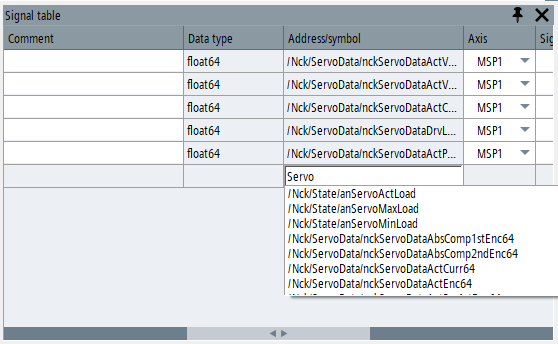
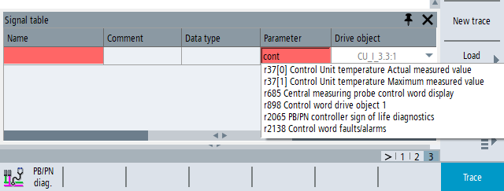
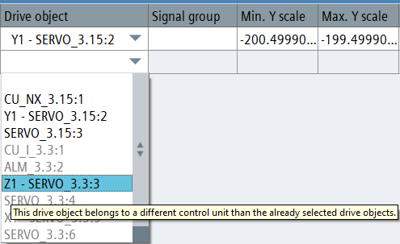

You can insert a variable into the trace configuration by directly entering data into the signal table.
Open the signal table using softkey "Signal table" or click in the toolbar on the symbol for "Signal table".
Enter the known part of the variable address into the "Address/symbol" column of the signal table.
An auto-complete list suggests names of the supported variables that contain the characters that have been entered. This is not case sensitive.
Select the required variable from the auto-complete list.
Confirm the entry with the Enter key or the <INPUT> key and select the parameters for the variable.
The "Drive object" field in the signal table can be edited. It contains a drop-down list of all drive objects that exist on the machine.
Select the required object from the list.
The "Parameter" and "Name" fields can now be edited.
In either of these two data fields, enter the parameter number or a known part of the parameter name, and select the required parameter from the auto-complete list.
The auto-complete list offers the traceable parameters of the selected drive object. In the list, a search is made for the characters entered into the signal table (this search is not case sensitive).
| Note |
Once the parameter has been selected it cannot be changed. The drive object can still be edited and can be changed for another drive object of the same type. However, for a signal with measurement data, if the drive object is changed, then its data are deleted in the trace diagram. |
All drive objects in the configuration must belong to the same Control Unit. As long as a new trace configuration does not contain a variable, all of the objects are displayed in black in the drop-down list for the "drive object". The Control Unit of the configuration is defined as soon as the first drive object is selected. Drive objects that belong to a different Control Unit are grayed out in the list. A tooltip displays a corresponding note.
| Note |
The objects displayed in gray can be selected. If you select a gray object, all drive objects already selected in the configuration become invalid. Confirm the pop-up message to perform this change. |